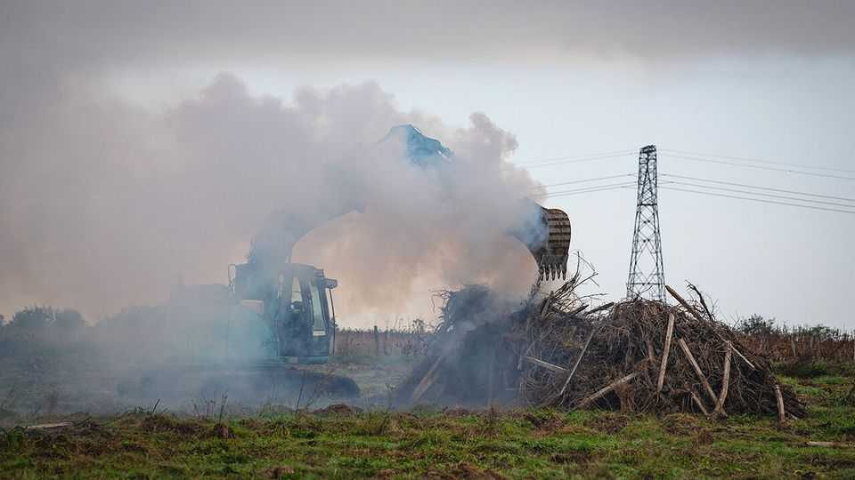
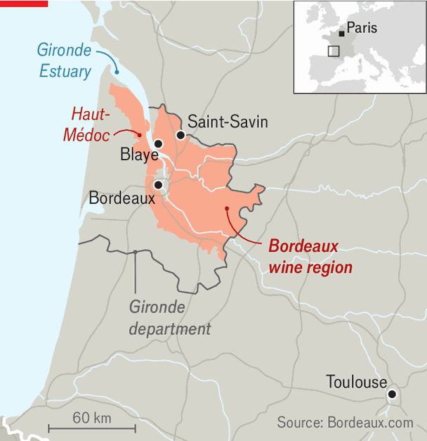

France’s unhappy countryside turns to the populist right
In long-suffering villages, Marine Le Pen has come to stand for hope

Nov 5th 2026
Across the Gironde estuary from the chateaux of Haut-Médoc lie the less fashionable farmlands of the region around Bordeaux. They have been triply battered of late: by extreme heat, higher energy costs and a global decline in the drinking of everyday wine. Many farmers have given up. Blackened piles of vines lie in fields ready to be burned. This year 1,095 winegrowers in the Gironde have ripped out 7,825 hectares (19,336 acres) of vines. Over a quarter of the region’s vineyards have been destroyed since 2023.
In the city of Bordeaux, rioters have set barricades ablaze in recent weeks. But here in the countryside France’s discontent is quieter and less visible. In the town of Blaye, pupils blockaded their secondary school, but it passed off calmly; on a weekday after school teenagers can be found playing cards at pavement tables in the Bar des Sports. The feeling is distress rather than rage. Locals are sceptical about the future and worried about the cost of filling the tank in a place where a car is essential, and think the government is doing nothing to help. “I’m sad, not angry,” says a vineyard owner, who is packing it in after 30 years due to the collapse of exports to China and of wine-drinking in France, adding: “We have a president who doesn’t listen.”

For decades rural Gironde tilted to the left, while the centre-right ruled in the prosperous city of Bordeaux. For 20 years the parliamentary constituency around Blaye was held by a Socialist, before swinging to the centrist party of President Emmanuel Macron in 2017. At parliamentary elections in 2022, however, the seat was captured by Edwige Diaz of Marine Le Pen’s populist-right National Rally (RN). Two years later she was re-elected in the first round, with 53% of the vote. In September the 39-year-old Ms Diaz, whose grandfather was a Spanish Communist, was elected to the Senate.
“We are permanently campaigning here,” says Ms Diaz. “All year round we are at the markets, people see us, they know us.” She has driven herself to a small village for the retirement party of a local gendarme. At the wine bar opposite the church she meticulously greets customers one by one. The RN’s support now comes not only from farm labourers and the working class but from shopkeepers, pharmacists and other traders. At legislative elections in 2024 the party was the most popular countrywide among working-class voters (57% of whom backed it) as well as white-collar employees (44%). “The left has become more radical and defends Gaza more than farmers,” declares Ms Diaz. “People also know they have nothing left to hope for from Emmanuel Macron or his dauphins. Next to that, Marine Le Pen’s discourse is serious and reassuring.”
Once a champion of the politics of indignation, Ms Le Pen has begun to leave the fury to the populist-left Jean-Luc Mélenchon and his Unsubmissive France (LFI) party. These days the RN leader is making a pitch, however improbably, as the candidate of comfort and promise. At her big campaign speech in the city of Orléans on October 25th, she dressed in a powder-pink jacket and spoke about “beauty” and “hope”.
A local focus on improving daily life has enabled the RN to put down roots in unlikely places. The village of Saint-Savin has seen better days; two of its tattoo parlours are boarded up. For 12 years the village was run by the left, but in March for the first time voters elected an RN mayor, Frédérique Joint. She has turned the street lighting back on at night. In October the village held a three-day fête, complete with a torchlit procession from the church, soapbox-racing through the streets, a DJ and la country dancing. “With the loss of the vineyards, we’re losing our terroir, our savoir-faire, our traditions,” says Ms Joint. Local budgets are squeezed by higher prices in the supermarket and at the pump. “People have a need to get together at festive feel-good events.”
There is plenty of red-meat identity politics at play, too, in places like this, with local candidates appealing to Christianity and the preservation of tradition. But the populists’ turn towards mundane governance issues offers some hope in hard times, and is part of a broader normalisation. “We are witnessing a major shift,” wrote Luc Rouban, a political scientist at Sciences Po university, in a recent research note, “with LFI taking the RN’s place on the fringes…LFI frightens moderate left-wing voters far more than the RN frightens moderate right-wing voters.”
In some ways France’s anxious, bitter mood is perplexing. The country provides its citizens with an unusually protective cradle-to-grave welfare state. Public social spending, at 32% of GDP, is higher than in any other European Union country but Finland. The French on average retire earlier and live longer as pensioners than most of their neighbours.
Yet something has broken in voters’ trust in government and in their faith in the social contract. Confidence in mainstream politics is collapsing. Just 16% of all respondents told a poll in October that Mr Macron is a good president, a record low since he was elected in 2017. In another, 81% held the government responsible for the recent violence. Consumer confidence has fallen to its lowest for 13 years. After a decade in office Mr Macron and the centrist politics he ushered in no longer represent promise, but disappointment. One winegrower in the Gironde says simply that he feels “defeated”. Such distress is shifting the balance of hope to the RN.■